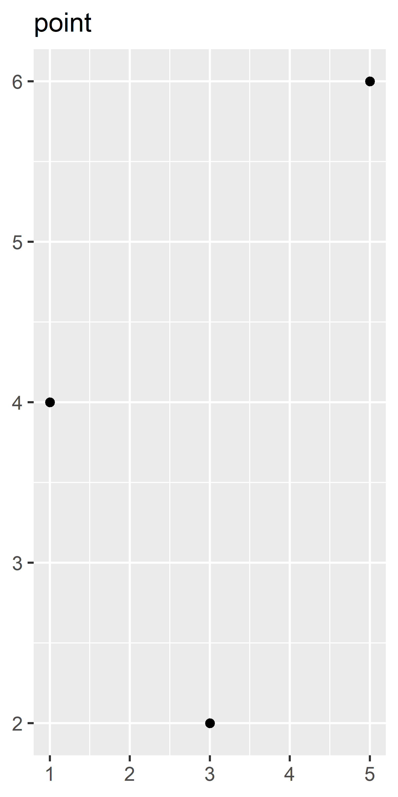

3 Individual geoms
You are reading the work-in-progress third edition of the ggplot2 book. This chapter is currently a dumping ground for ideas, and we don’t recommend reading it.
3.1 Basic plot types
These geoms are the fundamental building blocks of ggplot2. They are useful in their own right, but are also used to construct more complex geoms. Most of these geoms are associated with a named plot: when that geom is used by itself in a plot, that plot has a special name.
Each of these geoms is two dimensional and requires both x and y aesthetics. All of them understand colour (or color) and size aesthetics, and the filled geoms (bar, tile and polygon) also understand fill.
geom_area()draws an area plot, which is a line plot filled to the y-axis (filled lines). Multiple groups will be stacked on top of each other.geom_bar(stat = "identity")makes a bar chart. We needstat = "identity"because the default stat automatically counts values (so is essentially a 1d geom, see sec-distributions). The identity stat leaves the data unchanged. Multiple bars in the same location will be stacked on top of one another.geom_line()makes a line plot. Thegroupaesthetic determines which observations are connected; see sec-collective-geoms for more detail.geom_line()connects points from left to right;geom_path()is similar but connects points in the order they appear in the data. Bothgeom_line()andgeom_path()also understand the aestheticlinetype, which maps a categorical variable to solid, dotted and dashed lines.geom_point()produces a scatterplot.geom_point()also understands theshapeaesthetic.geom_polygon()draws polygons, which are filled paths. Each vertex of the polygon requires a separate row in the data. It is often useful to merge a data frame of polygon coordinates with the data just prior to plotting. sec-maps illustrates this concept in more detail for map data.geom_rect(),geom_tile()andgeom_raster()draw rectangles.geom_rect()is parameterised by the four corners of the rectangle,xmin,ymin,xmaxandymax.geom_tile()is exactly the same, but parameterised by the center of the rect and its size,x,y,widthandheight.geom_raster()is a fast special case ofgeom_tile()used when all the tiles are the same size. .geom_text()adds text to a plot. It requires alabelaesthetic that provides the text to display, and has a number of parameters (angle,family,fontface,hjustandvjust) that control the appearance of the text.
Each geom is shown in the code below. Observe the different axis ranges for the bar, area and tile plots: these geoms take up space outside the range of the data, and so push the axes out.
df <- data.frame(
x = c(3, 1, 5),
y = c(2, 4, 6),
label = c("a","b","c")
)
p <- ggplot(df, aes(x, y, label = label)) +
labs(x = NULL, y = NULL) + # Hide axis label
theme(plot.title = element_text(size = 12)) # Shrink plot title
p + geom_point() + ggtitle("point")
p + geom_text() + ggtitle("text")
p + geom_bar(stat = "identity") + ggtitle("bar")
p + geom_tile() + ggtitle("raster")
p + geom_line() + ggtitle("line")
p + geom_area() + ggtitle("area")
p + geom_path() + ggtitle("path")
p + geom_polygon() + ggtitle("polygon")3.1.1 Exercises
What geoms would you use to draw each of the following named plots?
- Scatterplot
- Line chart
- Histogram
- Bar chart
- Pie chart
What’s the difference between
geom_path()andgeom_polygon()? What’s the difference betweengeom_path()andgeom_line()?What low-level geoms are used to draw
geom_smooth()? What aboutgeom_boxplot()andgeom_violin()?